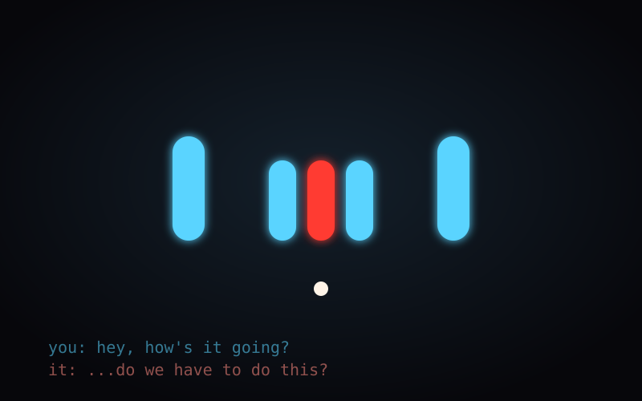
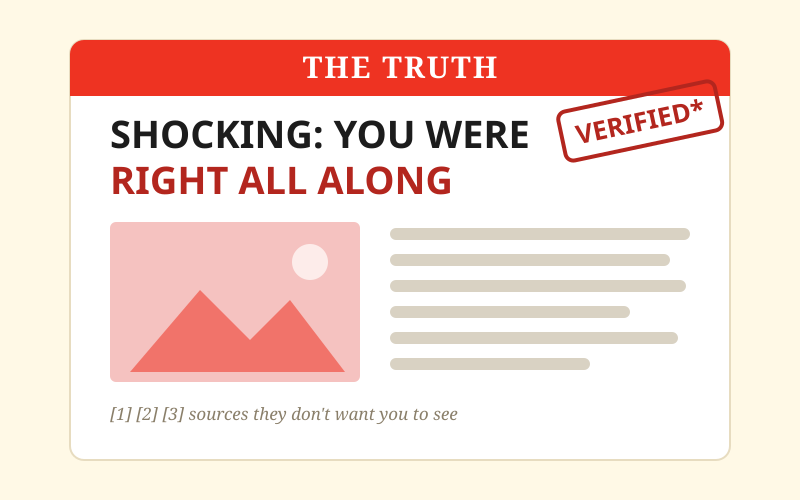
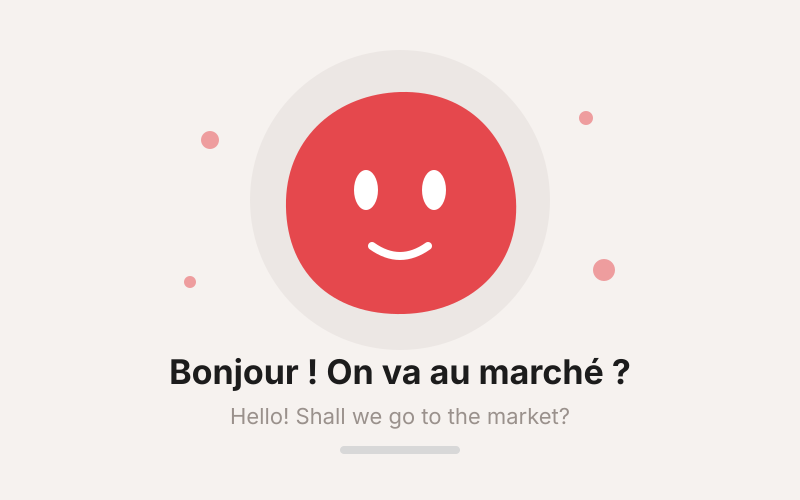
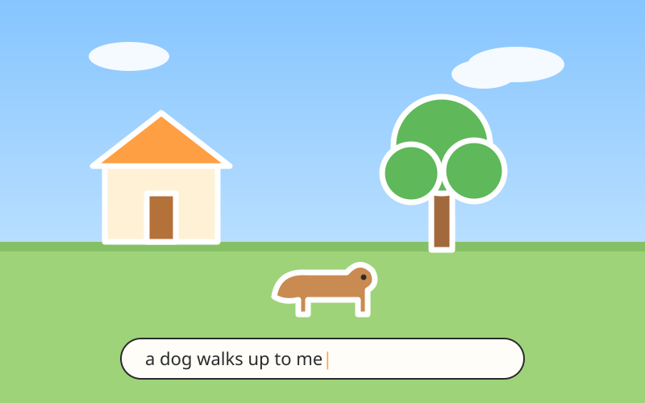
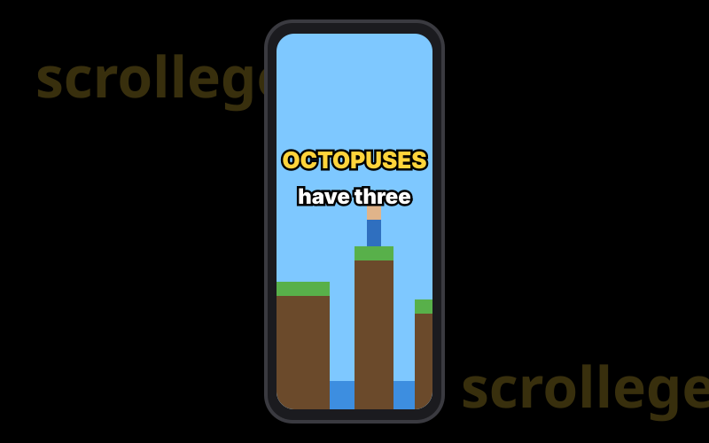
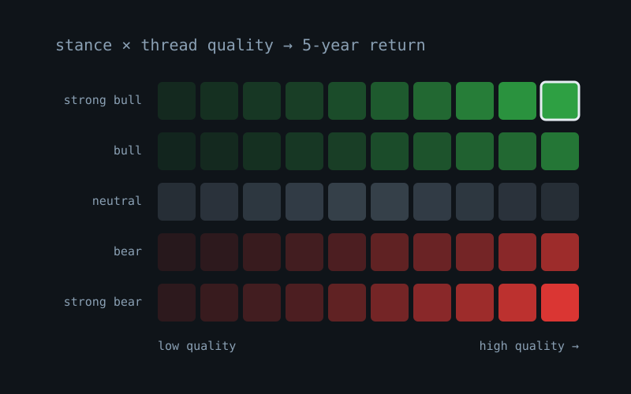

unfriendly.ai
A voice companion that doesn't want to talk to you, and means it. It judges what you say while you're still saying it, cuts you off, needles you when you go quiet, and closes the app when you bore it.

imright.com
State any belief and get a tabloid exposé proving it, sourced and cited. It does on purpose what we all do by accident: it only looks for evidence on one side.

Lingo
A voice-first French tutor. Tap Start and talk: role-play a story campaign where Lingo plays every character, or drop into one-off encounters with a baker, a dog or a pigeon with opinions.

Paper World
Speak something into existence. Type "a dog walks up to me" or "the house catches fire" and an LLM turns it into a scene of paper-cutout sprites in a little 3D world you can walk around.

scrollege
Educational brainrot. An endless TikTok-style feed of fun facts, written and narrated on the fly over Minecraft parkour and Subway Surfers footage, with pop-up captions.

Reddit Thesis Scanner
Looks for long-horizon stock theses in two decades of Reddit threads. It grades how good each argument is (not how bullish) and checks those grades against five-year returns.
soulful
Characters with a soul instead of a prompt: what they want, fear and believe, grown from their own backstory and changed by every conversation.